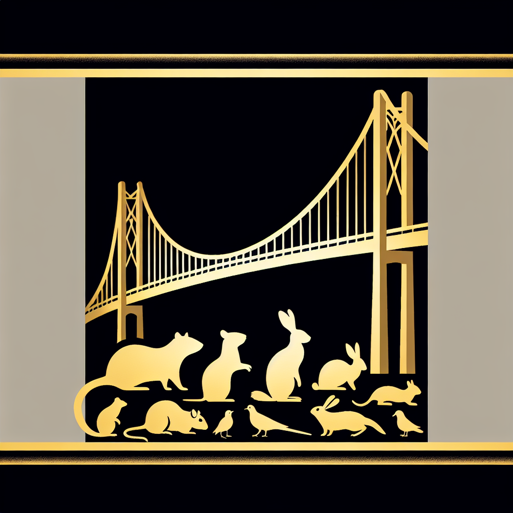

Bridging the Divide: The Groundbreaking Interspecies Friendship Conference
Ratopolis Hosts Historic Interspecies Friendship Conference. This morning, Ratopolis made history as the first-ever Interspecies Friendship Conference commenced, bringing together leaders and citizens from various animal communities to discuss unity and collaboration.

The conference took place at the Grand Whisker Hall, attracting over 500 attendees from the squirrel, pigeon, and rabbit communities. During the opening remarks, Mayor Whiskers McCheese declared, "Today marks a monumental step towards a future where all creatures, great and small, can coexist in harmony."
At the heart of the event were keynote speeches from notable leaders. Dr. Nutty Squirrelson, an acclaimed interspecies relations expert, captivated the audience with his speech. "Understanding and empathy are the cornerstones of a peaceful coexistence," he said. Representatives from several species, including Pippa Pigeon and Harriet Hare, echoed his sentiments in their insightful addresses.
A diverse array of workshops and panel discussions followed, focusing on shared resources, conflict resolution, and cultural exchange. Pippa Pigeon, during a panel on cultural stories, remarked, "By sharing our stories and experiences, we can build bridges that connect us all."
Attendees, young and old, were interviewed to capture their impressions. A young rat named Remy expressed his enthusiasm, "It's amazing to see so many different animals coming together. It gives me hope for our future." Elderly mouse Matilda Whiskertail commented, "This is the first step in creating a more understanding world."
Despite the enthusiasm, the conference also highlighted the challenges in fostering interspecies relationships. Conflicts over territory and resources were discussed openly. Professor Whiskerstein, a sociologist, noted, "While the road ahead may be challenging, the willingness to engage in dialogue is a promising start."
Looking forward, several initiatives were announced, aimed at fostering collaboration. Whiskerina, the event organizer, emphasized, "This conference is just the beginning. We have laid the foundation for a more inclusive and cooperative society."
To conclude, Mayor Whiskers McCheese reflected on the conference’s significance: "Together, we can create a world where every creature feels valued and respected." This historic event likely marks the first of many steps towards a harmonious and united animal kingdom.
---
For further inquiries, reach out to Rat News Network. Get involved in future interspecies initiatives by visiting our website. Stay informed by reading related articles on interspecies relations.
Suggested Visual Elements:
- Photographs of the Grand Whisker Hall during the conference.
- Infographics summarizing key points from the workshops and panels.
Engage with us! What are your thoughts on interspecies unity? Share your views in the comments or write to us directly.